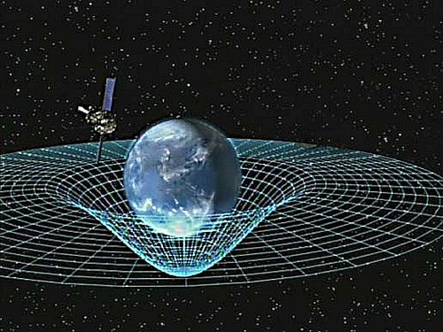

In physics, spacetime, also called the space-time continuum, is a mathematical model that fuses the three
dimensions of space and the one dimension of time into a single four-dimensional continuum. Spacetime
diagrams are useful in visualizing and understanding relativistic effects, such as how different observers
perceive where and when events occur.

Earth Bending Spacetime
Until the turn of the 20th century, the assumption had been that the three-dimensional geometry of the
universe (its description in terms of locations, shapes, distances, and directions) was distinct from time
(the measurement of when events occur within the universe). However, space and time took on new meanings
with the Lorentz transformation and special theory of relativity.
In 1908, Hermann Minkowski presented a geometric interpretation of special relativity that fused time and
the three spatial dimensions into a single four-dimensional continuum now known as Minkowski space. This
interpretation proved vital to the general theory of relativity, wherein spacetime is curved by mass and
energy.